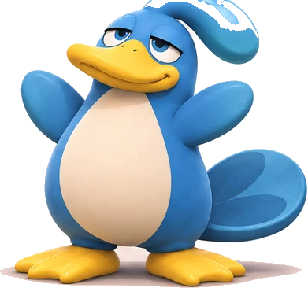
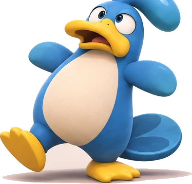
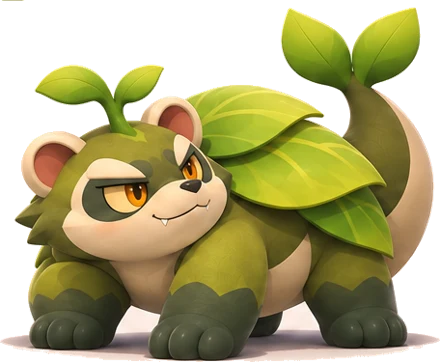
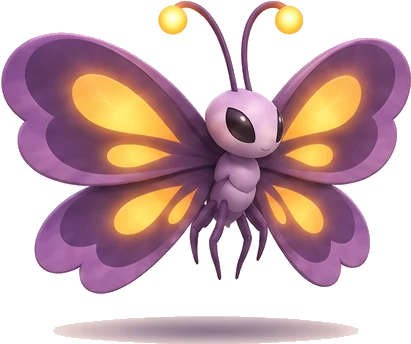

알로 와이어프레임 v2
v1을 실제 앱 화면 수준으로 다시 그렸다. 폰은 국내 차량 앱처럼 옅은 바탕에 흰 카드를 쌓는 구조이고 차 화면은 Pleos Connect의 3단 배치(주행 정보 · 앱 창 · 하단 바)를 그대로 따른다. 글꼴은 Pleos 시스템 글꼴인 Asta Sans로 바꿨다. 캐릭터는 승인본 character-production-01에서 잘라 왔다(art/design/wf/).
폰 · 연결부터 품기까지
차 화면에 나온
숫자 6개를 입력해 주세요
알로를 처음 켜면 차 화면에 연결 번호가 떠요
번호가 달라요. 차 화면을 다시 확인해 주세요
틀린 칸만 오류 색으로 칠하고 오류 문구는 입력칸 바로 아래에 붙인다. 연결에 성공하면 토스트를 띄우지 않고 다음 화면으로 넘어간다.
아이 이름 입력란은 두지 않는다(CLAUDE.md 규칙 3).
어떤 알을 품을까요?
오래 달릴수록 큰 알이 잘 자라요
eggTier small · mid · large. 알 크기, 이름, 라디오가 함께 바뀌어서 색을 못 봐도 고른 알을 알 수 있다.
버튼은 아이가 누르므로 72.
부화까지
남은 시간을 가장 크게 쓰고 퍼센트는 오른쪽에 작게 둔다. 날씨와 길 태그는 무대 왼쪽 위에, 빗방울 무늬는 무대 안에만 깐다. 무늬는 움직이지 않는다.
오른쪽 위 차 아이콘은 연결 상태와 연결 해제로 들어가는 곳이다.
덜컹! 알이 깜짝 놀랐어요.
두 손으로 감싸 주세요
급제동이나 급조향 신호가 오면 진행 카드가 이 카드로 바뀐다. 무대와 레이아웃은 그대로 두고 알만 작게 흔든다(멀미 방지). 동작 줄이기를 켜 둔 기기에서는 기운 채로 멈춘다.
폰 · 부화와 동행

웅덩이삐약
Puddle Pip
화면 전체가 알 노랑이 되는 건 이때 한 번뿐이다. 금 가기 3컷, 빛 2컷 뒤에 등장하고 전체 2400ms 동안 한 번만 재생한다. 번쩍이는 효과는 없다.
노랑 위 버튼은 동작 초록(흰 글자 6.50:1). 시연 부화 종이 아직 없어서 B를 넣었다.
저기 봐! 산이 보여

말풍선의 각진 왼쪽 아래 모서리가 생물을 가리킨다. 동작 초록은 영어 단어 하나에만 쓰고 대사는 50자를 넘기지 않는다.
먹이와 놀이는 자주 누르지 않으므로 아래 타일로 내렸다. 그림은 look 포즈 대신 SURPRISED를 썼다.
폰 · 도감

길싹이 웅덩이삐약
웅덩이삐약
등불나방만난 친구는 종별 tint 바탕에 IDLE 컷을 넣는다. 아직 못 만난 칸은 흰 바탕에 ?와 출현 힌트(species.json hint)만 보여 주고 실루엣은 숨긴다.
번호는 도감 순서다. G~L 6종은 데이터가 없어 "아직 몰라요"로 뒀다.
웅덩이삐약
일반Puddle Pip · 비 오는 날이면 누구나
- 만난 날
- 11월 6일 목요일
- 날씨
- 비
- 길
- 고속도로
- 함께 달린 거리
- 48km
무대를 좌우로 밀면 8방향 턴어라운드가 한 칸씩 넘어가고 점 8개가 지금 보는 방향을 알려 준다. 자동으로 돌리지는 않는다.
획득 기록에는 날짜, 날씨, 길만 남기고 위치 좌표는 쓰지 않는다(규칙 2). 기록은 폰에만 저장한다.
차 화면 · Pleos Connect
주행 가능 거리312km
주행 가능 거리298km
알이 60% 자랐어요
/game 상태를 차 화면에 맞게 새로 그린 것이고 폰 미러링이 아니다. 제목은 Pleos Headline Small(48, ExtraBold)이고 조작은 폰에서 한다.주행 가능 거리298km
웅덩이삐약이
깨어났어요
뒷자리에 이름을 물어보세요
주행 가능 거리241km
도착했어요
웅덩이삐약
비 · 고속도로 · 48km 함께 달림
v1에서 바뀐 점
- 글꼴을 Noto Sans KR에서 Asta Sans로 바꿨다. Pleos 시스템 UI에 들어가는 글꼴이라 차 화면과 폰의 인상이 같아진다
- 점선 자리표시를 모두 승인 캐릭터 컷으로 바꿨다. 배경을 지운 컷은
art/design/wf/에 있다 - 폰 화면에 실제 기기 크롬(상태 표시줄, 내비게이션 바, 홈 인디케이터)을 그렸다. 뒤로, 닫기, 탭 같은 시스템 아이콘은 2px 선으로 바꿨다. 환경 태그와 등급 아이콘은 그대로 채운 모양이다
- 차 화면은 Pleos의 주행 정보 · 앱 창 · 하단 바 배치 안에 알로 창을 넣었다. 주행 중에는 분할 창, 정차 중에는 단일 창이다. 주변 회색은 목업용이고 알로 UI 색이 아니다
- 차 화면 제목을 36에서 Pleos Headline Small 48로 키웠다
열린 항목
- C · G~L 6종 데이터와 시연 부화 종. 지금은 B(웅덩이삐약)로 그렸다
- D · 창밖 보기용 look 포즈 12종. 지금은 SURPRISED로 대신한다
- D · 부화 연출 5컷(금 가기 3, 빛 2)과 알 크기 3종 × 성장 3단계 그림
- B · 탭 3개(알 · 친구 · 도감) 구조를 현재 화면 흐름(pairing → incubating → hatching → companion → dex)과 맞출지
- B · Asta Sans를 Flutter 앱에 번들할지. 차 앱은 시스템 글꼴을 그대로 쓰면 된다